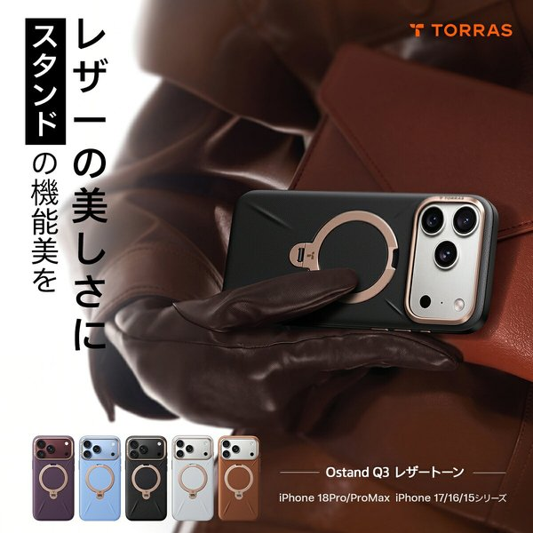
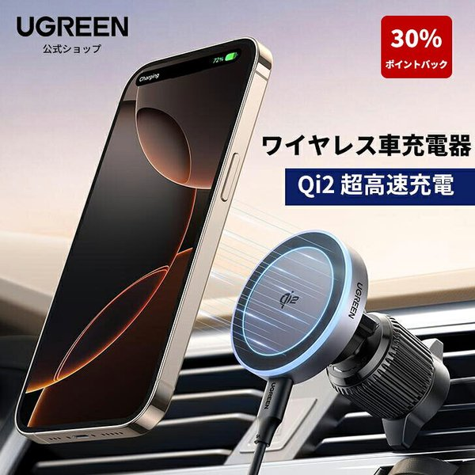
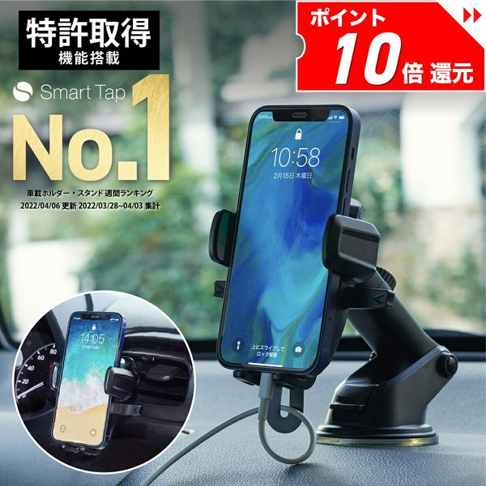
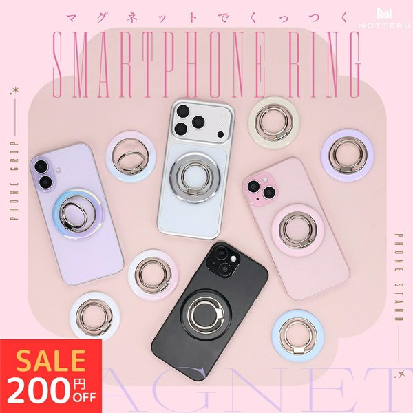
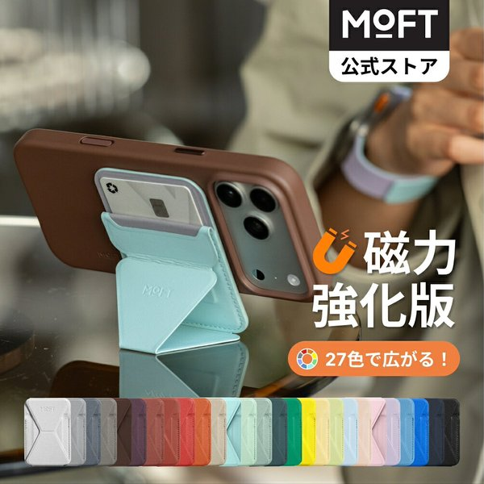
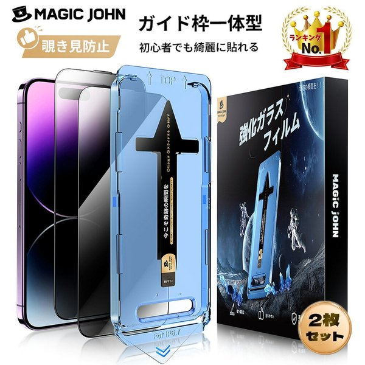
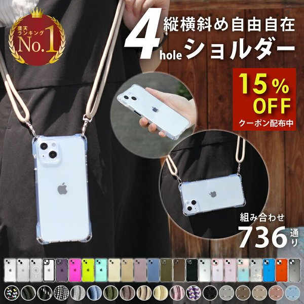
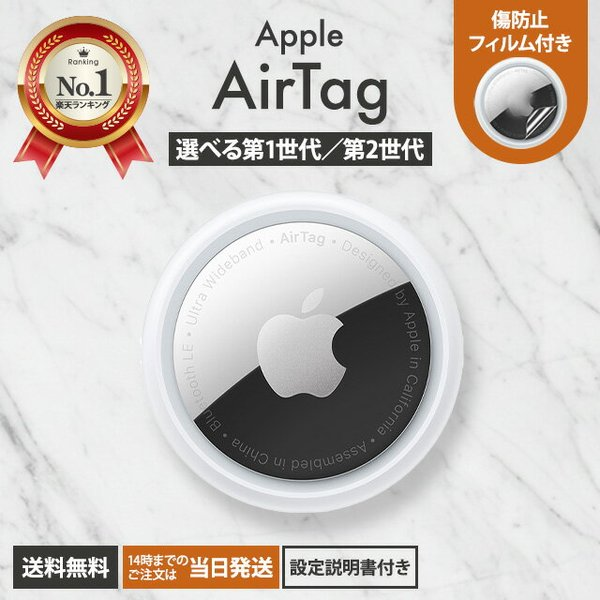
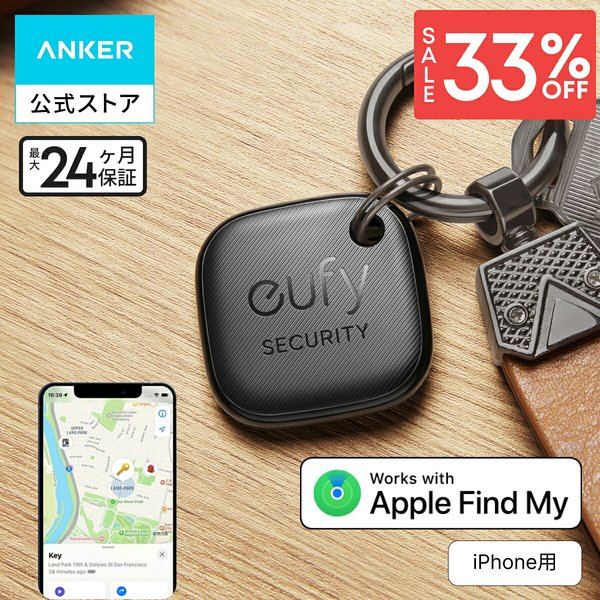
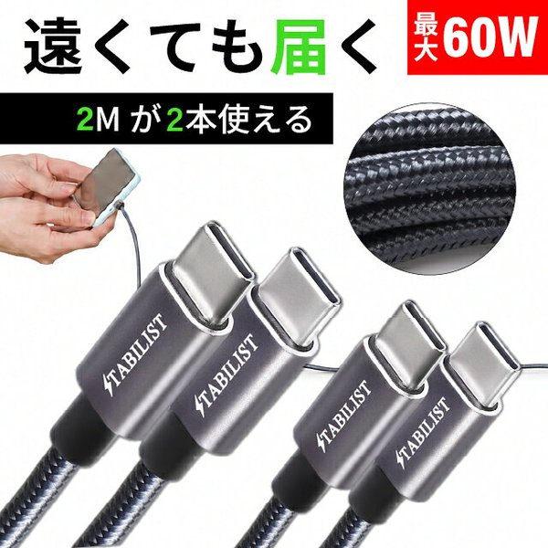

【2026年・ブラックフライデー】iPhone・スマホ快適化アクセサリー10選｜MagSafeケース・車載ホルダー・Qi2車載充電器・リングスタンド・ガラスフィルム・ショルダー・AirTag・eufy・高耐久ケーブル
スマホは、ケースと周辺機器で持ちやすさが変わります。落とさない、なくさない、充電を忘れない。この3つを揃えるだけで、毎日の小さなストレスが減ります。
選ぶ軸は3つです。「まずMagSafe対応かどうか」。対応していれば、ケースを着けたまま車載ホルダーや充電器に付けられます。「次に持ち運び方」。ショルダーを付けるなら、ケースを付け替えずに使えるタイプが便利です。「最後に失くしたときの備え」。AirTagやeufyのようなタグを鍵や財布に付けておくと、探す時間が短くなります。なお、レビュー件数が50件に満たない商品は記事内に実数を明記しています。
本記事では、楽天市場で人気・高評価のiPhone・スマホ快適化アクセサリー10選を、実売価格とレビュー評価つきで写真付き紹介します。
- おすすめ10選 スペック・特徴比較表
- BEST 1｜TORRAS iPhone Duo ケース MagSafe対応
- BEST 2｜UGREEN MagFlow Qi2 車載ワイヤレス充電器
- BEST 3｜Smart Tap 車載スマホホルダー
- BEST 4｜MOTTERU MagSafe対応 スマホリングスタンド
- BEST 5｜MOFT Snap-On スマホスタンド（磁力強化版）
- BEST 6｜MAGIC JOHN ガラスフィルム 2枚組（覗き見防止）
- BEST 7｜LIVIEW スマホショルダー ストラップ
- BEST 8｜Apple AirTag 第2世代（専用ケース付き）
- BEST 9｜Anker Eufy SmartTrack Link（iPhone用）
- BEST 10｜Savileman USB-Cケーブル 60W 2m 2本組
- 【読者負担0円】買わなくても得する無料サービス
- まとめ：MagSafe・スマホアクセサリー10選の選び方
| 順位 | 商品名 | ブランド | 最大の特徴・おすすめ理由 | 総合評価 |
|---|---|---|---|---|
| BEST 1 | TORRAS iPhone Duo ケース MagSafe対応 | TORRAS | MagSafe対応で充電器や車載ホルダーに付く | 4.75 |
| BEST 2 | UGREEN MagFlow Qi2 車載ワイヤレス充電器 | UGREEN | Qi2規格のワイヤレス充電に対応 | 4.62 |
| BEST 3 | Smart Tap 車載スマホホルダー | Smart Tap | 吸盤と粘着の両方で固定できる | 4.45 |
| BEST 4 | MOTTERU MagSafe対応 スマホリングスタンド | MOTTERU | MagSafeのマグネットで着脱できる | 4.59 |
| BEST 5 | MOFT Snap-On スマホスタンド（磁力強化版） | MOFT | 磁力強化版でズレにくい | 4.56 |
| BEST 6 | MAGIC JOHN ガラスフィルム 2枚組（覗き見防止） | MAGIC JOHN | 斜めからのぞき見されにくい | 4.63 |
| BEST 7 | LIVIEW スマホショルダー ストラップ | LIVIEW | 斜め掛けで両手が空く | 4.55 |
| BEST 8 | Apple AirTag 第2世代（専用ケース付き） | Apple | iPhoneの「探す」アプリで位置を確認できる | 4.70 |
| BEST 9 | Anker Eufy SmartTrack Link（iPhone用） | Anker（Eufy） | Appleの「探す」に対応 | 4.23 |
| BEST 10 | Savileman USB-Cケーブル 60W 2m 2本組 | Savileman | 60W対応でノートPCの充電にも使える | 4.56 |
TORRAS iPhone Duo ケース MagSafe対応

TORRASのDuoケースは、MagSafe対応のiPhoneケースです。背面のリングを360度回転できるスタンドが付き、縦置きでも横置きでも画面を見られます。MagSafeの磁力で、車載ホルダーや充電器にそのまま付けられます。楽天市場での実売価格は約8,480円（2026年11月時点）。
- MagSafe対応で充電器や車載ホルダーに付く
- 360度回転スタンドで縦横どちらでも立てられる
- 耐衝撃設計で落下時の衝撃をやわらげる
- ケースとしては価格が高めなので、デザインと機能の両方を重視する人向け
UGREEN MagFlow Qi2 車載ワイヤレス充電器

UGREENのMagFlowは、Qi2規格の車載ワイヤレス充電器です。MagSafeの磁力でスマホを固定し、エアコンの吹き出し口などに付けて使います。ケーブルを挿さずに置くだけで充電でき、ナビを使いながらの充電に向いています。楽天市場での実売価格は約4,380円（2026年11月時点）。
- Qi2規格のワイヤレス充電に対応
- マグネットでスマホを固定できる
- 車の吹き出し口に付けて使える
- 厚みのあるケースを着けていると、磁力が弱まることがある
Smart Tap 車載スマホホルダー

Smart Tapは、車のダッシュボードやエアコン吹き出し口に付けるスマホホルダーです。吸盤と粘着の両方で固定でき、片手でスマホを着脱できます。充電式ではないタイプなので、電池切れを気にせず使えます。楽天市場での実売価格は約2,980円（2026年11月時点）。
- 吸盤と粘着の両方で固定できる
- 片手でスマホを着脱できる
- 充電不要で電池切れの心配がない
- 夏の高温になるダッシュボードでは、吸盤が弱まることがある
MOTTERU MagSafe対応 スマホリングスタンド

MOTTERUのスマホリングスタンドは、MagSafe対応のマグネット式です。指をかけてスマホを落としにくくするリングと、360度回転するスタンドの2役をこなします。金属製のリングで、使わないときは折りたたんで薄くできます。楽天市場での実売価格は約1,780円（2026年11月時点）。
- MagSafeのマグネットで着脱できる
- リングとスタンドの2役
- 360度回転して角度を変えられる
- マグネット式なので、対応していないケースには直接付けられない
MOFT Snap-On スマホスタンド（磁力強化版）

MOFTのSnap-Onは、スマホの背面に貼る折りたたみ式スタンドです。磁力を強化したモデルで、MagSafe対応のスマホにそのまま付けられます。開くと縦置き・横置きのスタンドになり、閉じれば薄いままポケットに入ります。楽天市場での実売価格は約4,480円（2026年11月時点）。
- 磁力強化版でズレにくい
- 縦置き・横置きのスタンドになる
- 閉じると薄くポケットに入る
- 貼る位置がずれると、立てたときの角度が安定しない
MAGIC JOHN ガラスフィルム 2枚組（覗き見防止）

MAGIC JOHNのガラスフィルムは、2枚組の覗き見防止タイプです。斜めから画面を見られにくく、電車やカフェでスマホを開く場面に向いています。ガイド枠が付き、位置を合わせて置くだけで貼れます。楽天市場での実売価格は約1,980円（2026年11月時点）。
- 斜めからのぞき見されにくい
- ガイド枠付きで貼りやすい
- 2枚組で失敗しても予備がある
- 覗き見防止フィルムは画面がやや暗く見えることがある
LIVIEW スマホショルダー ストラップ

LIVIEWのスマホショルダーは、スマホに付けて斜め掛けできるストラップです。4種類の掛け方を選べ、肩掛け・斜め掛け・首掛けと使い分けられます。両手が空くので、買い物や子どもの送り迎えのときにも便利です。楽天市場での実売価格は約1,080円（2026年11月時点）。
- 斜め掛けで両手が空く
- 4種類の掛け方を選べる
- ケースを付け替えずに使える
- ストラップの長さが合わないと、歩くたびにスマホが揺れる
Apple AirTag 第2世代（専用ケース付き）

AppleのAirTagは、鍵や財布、鞄に付けて場所を探せるスマートタグです。iPhoneの「探す」アプリと連携し、近くにあるときは音を鳴らして見つけられます。第1世代と第2世代から選べ、専用ケース付きで届きます。楽天市場での実売価格は約3,980円（2026年11月時点）。
- iPhoneの「探す」アプリで位置を確認できる
- 近くでは音を鳴らして探せる
- 専用ケース付きですぐ使える
- Android端末では「探す」アプリが使えず、機能が限られる
Anker Eufy SmartTrack Link（iPhone用）

AnkerのEufy SmartTrack Linkは、Appleの「探す」に対応した紛失防止タグです。鍵や財布に付けておくと、見当たらないときにスマホから音を鳴らせます。電池式で、電池を交換しながら長く使えます。楽天市場での実売価格は約2,990円（2026年11月時点）。
- Appleの「探す」に対応
- 鍵や財布に付けられる
- 電池式で電池を替えて使える
- iPhone向けの設計で、Android端末では使えない
Savileman USB-Cケーブル 60W 2m 2本組

SavilemanのUSB-Cケーブルは、60Wの給電に対応した2mの2本組です。ナイロン編みで、毎日持ち歩いても断線しにくい作り。リビングと寝室など、場所ごとに1本ずつ置いておけます。楽天市場での実売価格は約1,115円（2026年11月時点）。
- 60W対応でノートPCの充電にも使える
- 2mの長さでソファやベッドから届く
- 2本組で場所ごとに置ける
- データ転送速度は給電ほどの速さではない
この記事の商品を買う前に、まずは無料で得する選択肢をチェック。どれも登録・利用は0円で、無料期間中に解約すれば料金はかかりません。読みたい雑誌がある人、ポイントを貯めたい人、アンケートなら気軽という人、それぞれに合うものを選べます。
初回31日無料・無料期間中に解約すれば0円 → 楽天ポイントモール｜登録無料で毎日ポイ活
買い物なしでもポイントが貯まる無料サービス → 楽天インサイト｜アンケートに答えてポイント
登録無料・すきま時間のアンケートで貯まる → 楽天カード｜年会費永年無料
新規発行・年会費ずっと0円 →
4つのサービスの違いと使い分けは「出費0円で得する！買わずにポイントが貯まる無料サービス厳選4選」でまとめています。
💡 まとめ：MagSafe・スマホアクセサリー10選の選び方
スマホ周りは、まずケースと画面の保護から。MagSafe対応ならTORRASのDuoケース、画面はMAGIC JOHNのガラスフィルムで揃います。車で使うなら、Smart TapのホルダーとUGREENのMagFlow車載充電器を組み合わせると、乗せて置くだけで充電できます。持ち歩きは、LIVIEWのショルダーとMOTTERUのリングスタンド、デスクではMOFTのSnap-Onスタンド。なくしもの対策は、AppleのAirTagとAnker EufyのSmartTrack Linkを鍵と財布に分けて付けます。充電ケーブルはSavilemanの60W対応2本組を、リビングと寝室に1本ずつ。
楽天市場では「5と0のつく日」や「お買い物マラソン」などのキャンペーンに合わせて購入すると、ポイント還元が最大化してお得に手に入ります。ぜひチェックしてみてくださいね。